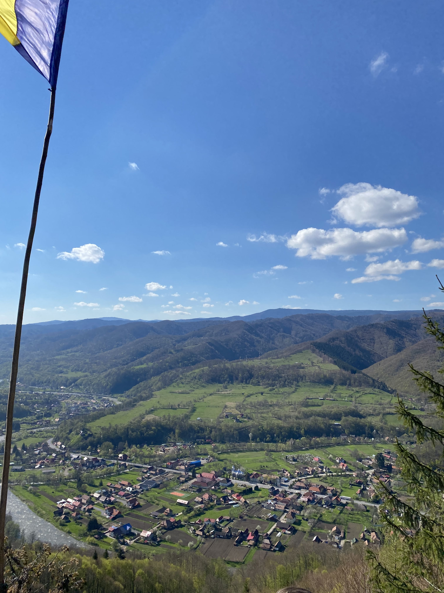

Primar
Lirca Marius Ioan
Viceprimar
-
Secretar General
Demian Angela
Asezarea Geografica
Comuna Răstoliţa este situată în partea de nord a judeţului Mureş, la poalele Munţilor Călimani şi a Munţilor Gurghiului, pe malul râului Mureş, fiind întretăiată de paralela 46,58,40” longitudine nordică şi meridianul 24,59,30 longitudine estică. Altitudine este de aproximativ 530 m faţă de nivelul mării, suprafaţa, aproximativ 26.000 ha din care 22.000 păduri. Comuna Rastolita se afla la mijloc de drum între orasele Târgu Mures si Gheorgheni, incluzând satele Rastolita, Borzia, Iod, Galaoaia si Andreneasa. Comuna are o baza de exploatare forestiera si un santier pentru construirea unui baraj de hidrocentrala. Aflata la poalele muntilor, ofera cai de acces în Muntii Calimani pe valea Rastolitei si pe valea Visei, iar în Muntii Gurghiului pe valea Iodului.
Atracții
Varful Listes
Daca esti pasionat de plimbari prin natura atunci Varful Listes este perfect pentru tine. De pe acest varf se poate observa frumusetea intregului sat.
Barajul Rastolita
Alta locatie perfecta pentru pasionatii de plimbari prin natura este Barajul Răstoliţa. Aceasta locatie este situata intre munti si are o frumusete deosebita.
Festivalul Vaii Muresului
Daca vizitezi Răstoliţa in timpul verii vei avea ocazia sa vizitezi Festivalul Vaii Muresului, festival unde se aduna multe localitati care isi prezinta traditiile.
Suprafață și Populație
Informații Utile
Transport public
Plecări din Reghin
| Luni-Vineri |
|---|
| 5:50 |
| 7:00 |
| 8:00 |
| 9:00 |
| 10:00 |
| 11:00 |
| 12:00 |
| 13:00 |
| 14:00 |
| 15:00 |
| 16:00 |
| 17:00 |
| 18:00 |
Plecări din Răstoliţa
| Luni-Vineri |
|---|
| 6:40 |
| 7:50 |
| 8:50 |
| 9:50 |
| 10:50 |
| 11:50 |
| 12:50 |
| 13:50 |
| 14:50 |
| 15:50 |
| 16:50 |
| 17:50 |
| 18:50 |
Plecări din Reghin (Sâmbătă)
| Sâmbătă |
|---|
| 5:50 |
| 8:00 |
| 11:00 |
| 14:00 |
| 16:00 |
Plecări din Răstoliţa (Sâmbătă)
| Sâmbătă |
|---|
| 6:40 |
| 8:50 |
| 11:50 |
| 14:50 |
| 16:50 |